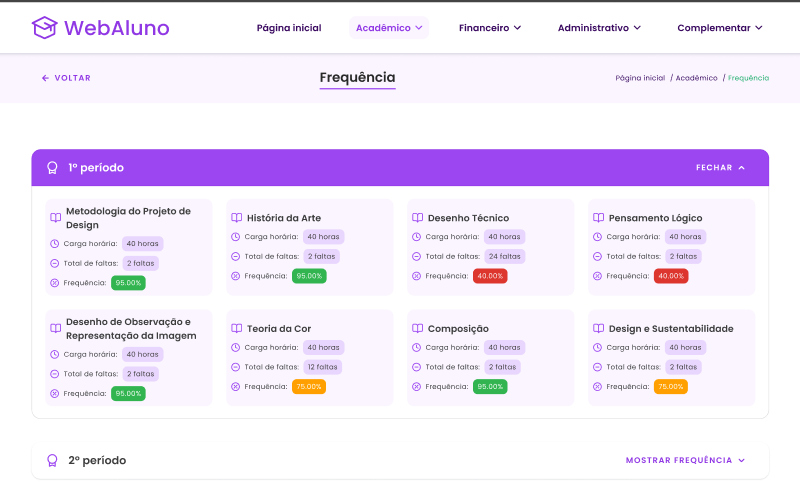
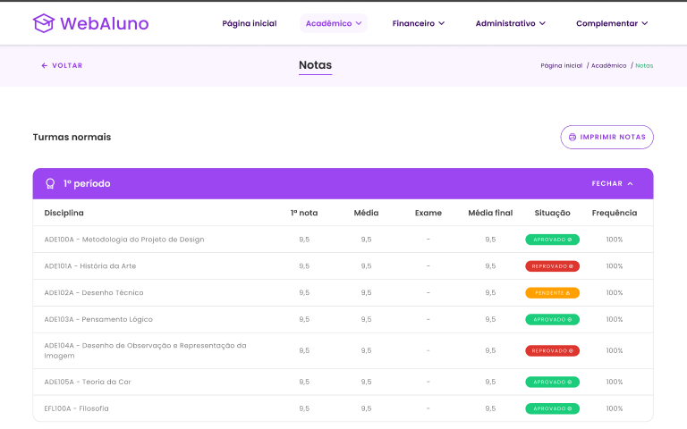
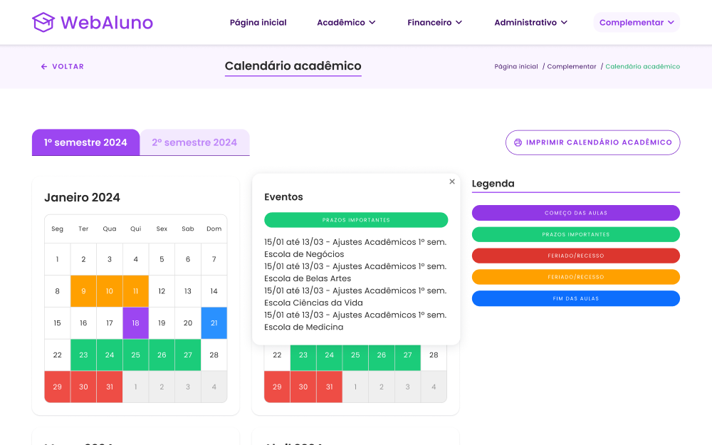
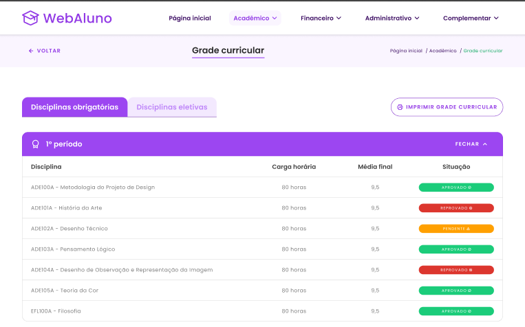
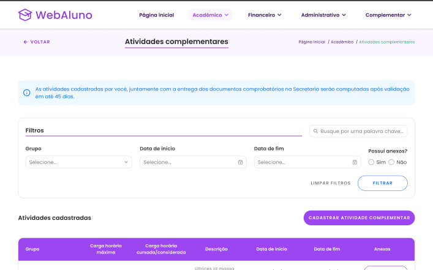
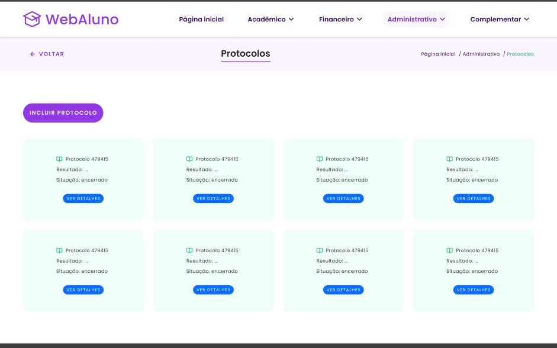

The challenge
One portal has to cover many tasks, from grades and class schedules to payments, documents and notices. It also serves undergraduate and graduate students, including people who work or have busy routines.
A redesign of the PUCPR student portal, making grades, schedules, payments and documents easier to find and manage.

WebAluno is the student portal of PUCPR, a university in Brazil. Students use it to check grades and attendance, pay tuition, open requests and look up the academic calendar.
In a UI Design course, the brief was to redesign an existing interface. Gabriela Munhoz and I chose WebAluno and took it from wireflows to a style guide, a component library and final desktop screens.
One portal has to cover many tasks, from grades and class schedules to payments, documents and notices. It also serves undergraduate and graduate students, including people who work or have busy routines.
Make academic information easier to find and manage, with an intuitive, visually pleasant interface that students can use at any time, on any device.
Wireflows for the portal's main areas, a reference board, a style guide, a component library, and final desktop screens for all the portal's menus.
A redesign proposal created for a university UI Design course, not an official PUCPR release.






The home screen summarizes tuition with the option to pay, notices, current courses, grades, attendance and student details.
Every task sits under Home, Academic, Financial, Administrative or Complementary, and breadcrumbs show students where they are.
Hovering over a marked date in the academic calendar explains what it means, such as a holiday, with no extra clicks.